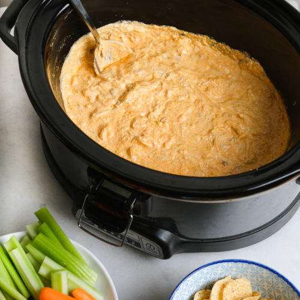

Buffalo chicken dip is an essential gameday recipe we love throughout the seasons. We find this is a great recipe that can be easily made and packed up on the go to take to local games we attend or stay in at home and enjoy together! It is super easy to make and we find it is a great and filling budget recipe with items that can be found at your local dollar store and can be served with chips or healthier options like carrots and celery.
